Armenian
 Sylfaen
Sylfaen
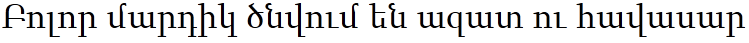
Mshtakan+bold, italic, bold-italic
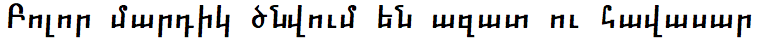
Arial Unicode MS(lion)
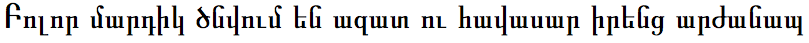
Arabic
 Arabic Typesetting
Arabic Typesetting
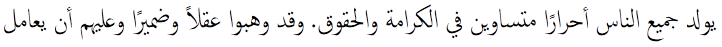
 Traditional Arabic +bold
Traditional Arabic +bold
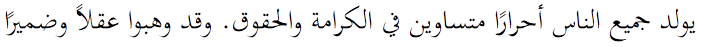
Al Bayan+bold
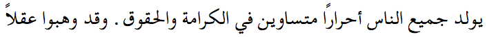
 Sakkal Majalla
Sakkal Majalla
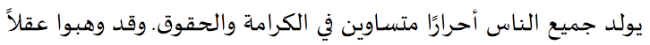
Decotype Naskh
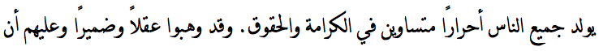
 Simplified Arabic
Simplified Arabic
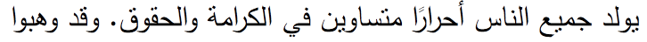
Baghdad
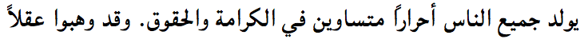
Geeza Pro

Nadeem
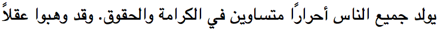
Damascus(lion)
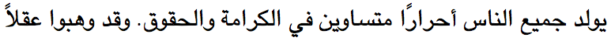
 Arial+bold, italic, bold-italic
Arial+bold, italic, bold-italic
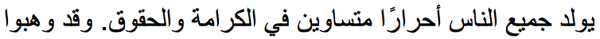
Arial Unicode MS
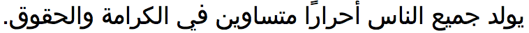
 Tahoma+negreta
Tahoma+negreta
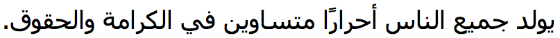
 Microsoft Sans Serif
Microsoft Sans Serif
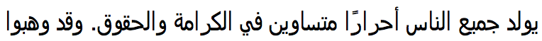
 Courier New+bold, italic, bold-italic
Courier New+bold, italic, bold-italic
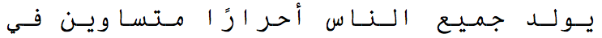
 Simplified Arabic Fixed
Simplified Arabic Fixed
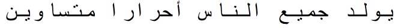
 Andalus
Andalus
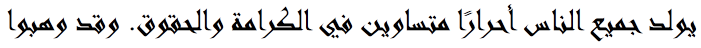
KufiStandardGK
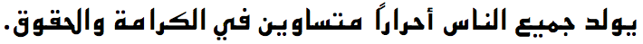
 Microsoft Uighur+bold
Microsoft Uighur+bold
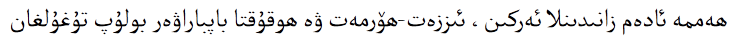
 Aldhabi(win8)
Aldhabi(win8)
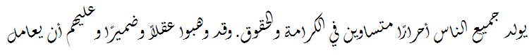
 Urdu Typesetting(win8)
Urdu Typesetting(win8)
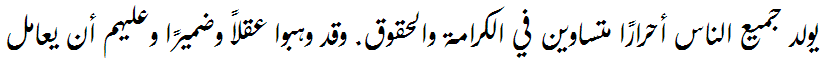
Bengali
 Shonar Bangla +bold
Shonar Bangla +bold
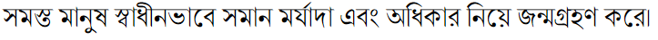
 Nirmala UI (win8)
Nirmala UI (win8)
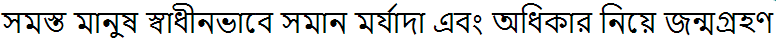
 Vrinda +bold
Vrinda +bold

Bangla MN(lion)
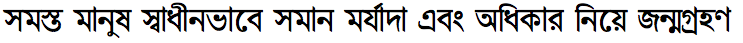
Bangla Sangam MN(lion)
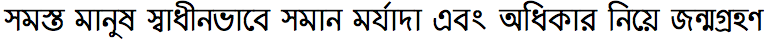
Arial Unicode MS(lion)
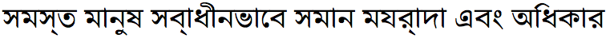
Canadian Syllabics
 Euphemia
Euphemia
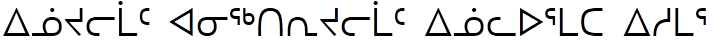
Euphemia UCAS+bold, italic
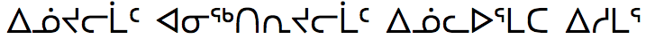
 Gadugi(win8)
Gadugi(win8)
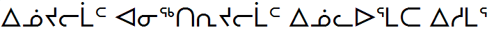
Cherokee
 Plantagenet Cherokee
Plantagenet Cherokee
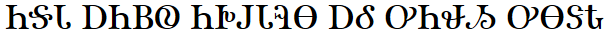
Plantagenet Cherokee
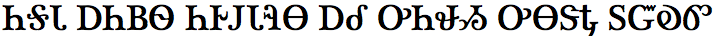
Noteworthy(lion)
 Gadugi(win8)
Gadugi(win8)
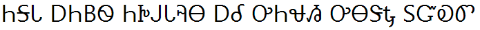
Chinese (Simplified)
 KaiTi Simplified
KaiTi Simplified
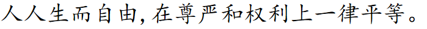
Kai Simplified
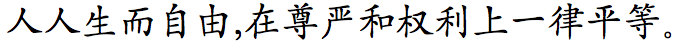
STKaiti Simplified
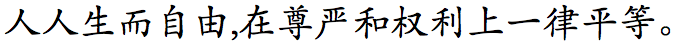
 FangSong Simplified
FangSong Simplified
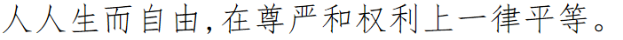
STFangsong Simplified
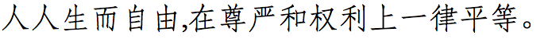
 Microsoft YaHei Simplified
Microsoft YaHei Simplified
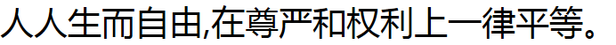
 NSimSun Simplified
NSimSun Simplified
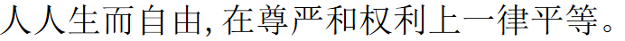
 SimSun Simplified
SimSun Simplified
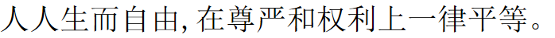
 SimSun-ExtB Simplified
SimSun-ExtB Simplified
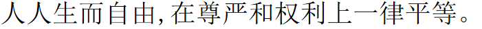
 SimHei Simplified
SimHei Simplified

Hei Simplified
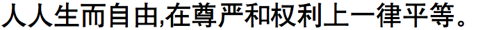
STHeiti+light Simplified
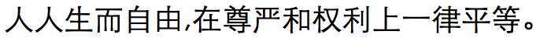
STSongSimplified
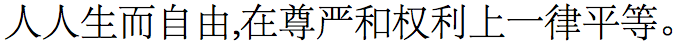
Chinese (Traditional)
 DFKai-SB Traditional
DFKai-SB Traditional
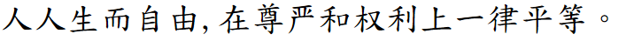
BiauKai Traditional
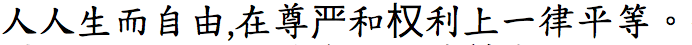
 Microsoft JhengHei +bold Traditional
Microsoft JhengHei +bold Traditional
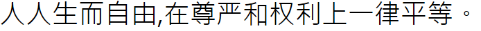
 MingLiU Traditional
MingLiU Traditional
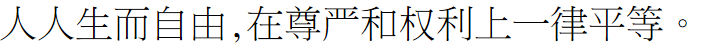
 MingLiU-ExtB Traditional
MingLiU-ExtB Traditional
 MingLiU-HKSCS-ExtB Traditional
MingLiU-HKSCS-ExtB Traditional
 PMingLiU Traditional
PMingLiU Traditional
 PMingLiU-ExtB Traditional
PMingLiU-ExtB Traditional
Apple LiGothic Traditional
LiHei Pro Traditional

Apple LiSong Traditional

LiSong Pro Traditional

Devanagari
 Aparajita +bold, italic, bold-italic
Aparajita +bold, italic, bold-italic
 Kokila +bold, italic, bold-italic
Kokila +bold, italic, bold-italic
 Mangal +bold
Mangal +bold
 Utsaah +bold, italic, bold-italic
Utsaah +bold, italic, bold-italic
 Nirmala UI (win8)
Nirmala UI (win8)
Devanagari MT+bold
Arial Unicode MS(lion)

Devanagari Sangam MN(lion)
Ethiopic
 Nyala
Nyala
Kefa(lion)
Georgian
 Sylfaen
Sylfaen
Menlo+bold, italic, bold-italic
Arial Unicode MS(lion)
Gujarati
 Shruti
Shruti
 Nirmala UI (win8)
Nirmala UI (win8)
Gujarati MT+bold
Gujarati Sangam MN(lion)
Arial Unicode MS(lion)
Gurmukhi
 Raavi +bold
Raavi +bold
 Nirmala UI (win8)
Nirmala UI (win8)
Gurmukhi MT
Gurmukhi MN(lion)
Arial Unicode MS(lion)
Hebrew
 Times New Roman +bold, italic, bold-italic
Times New Roman +bold, italic, bold-italic
 FrankRuehl
FrankRuehl
New Peninim MT +bold, inclined, bold-inclined -A
 Narkisim
Narkisim
Corsiva Hebrew +bold -A
 David +bold
David +bold
Raanana +bold -A

 Aharoni
Aharoni
 Arial +bold
Arial +bold
Arial Hebrew +bold -A
Arial Unicode MS(lion)
Lucida Grande
 Tahoma
Tahoma
 Microsoft Sans Serif(lion)
Microsoft Sans Serif(lion)
 Gisha +bold
Gisha +bold
 Levenim MT +bold
Levenim MT +bold
 Miriam
Miriam
 Miriam Fixed
Miriam Fixed
 Rod
Rod
 Courier New
Courier New
Japanese
 Meiryo +bold, italic, bold italic
Meiryo +bold, italic, bold italic
 Meiryo UI +bold, italic, bold italic
Meiryo UI +bold, italic, bold italic
 MS Gothic
MS Gothic
 MS PGothic
MS PGothic
 MS UI Gothic
MS UI Gothic
Hiragino Kaku Gothic Pro/ProN+W6
Hiragino Maru Gothic Pro/ProN
Osaka+regular-mono
Hiragino Kaku Gothic Std/StdN
 MS Mincho
MS Mincho
 MS PMincho
MS PMincho
Hiragino Mincho Pro/ProN+w6
Kannada
 Tunga+bold
Tunga+bold
 Nirmala UI (win8)
Nirmala UI (win8)
Kannada MN(lion)
Kannada Sangam MN(lion)
Arial Unicode MS(lion)
Khmer
 DaunPenh
DaunPenh
 Khmer UI+bold
Khmer UI+bold
 MoolBoran
MoolBoran
Khmer MN(lion)+bold
Khmer Sangam MN(lion)
Korean
 Batang
Batang
 BatangChe
BatangChe
 Dotum
Dotum
 DotumChe
DotumChe
 Gulim
Gulim
 GulimChe
GulimChe
 GungSuh
GungSuh
 GungSuhChe
GungSuhChe
 Malgun Gothic +bold
Malgun Gothic +bold
Apple Gothic
Apple Myungjo
Gungseo
HeadlineA
PCMyungjo
PilGi
Nanum Brush Script(lion)
Nanum Pen Script(lion)
Nanum Gothic(lion)
Nanum Myeongjo(lion)
Lao
 Lao UI +bold
Lao UI +bold
 Dokchampa
Dokchampa
Lao MN(lion)
Lao Sangam MN(lion)
Malayalam
 Kartika +bold
Kartika +bold
 Nirmala UI (win8)
Nirmala UI (win8)
Malayalam MN(lion)

Malayalam Sangam MN(lion)
Arial Unicode MS(lion)
Mongolian
 Mongolian Baiti
Mongolian Baiti
STHeiti
STKaiti
Myanmar
Myanmar MN(lion)
Myanmar Sangam MN(lion)
 Myanmar Text(Win8)
Myanmar Text(Win8)
New Tai Lue
 Microsoft New Tai Lue +bold
Microsoft New Tai Lue +bold

N'Ko
 Ebrima +bold
Ebrima +bold
Oriya
 Kalinga +bold
Kalinga +bold
 Nirmala UI (win8)
Nirmala UI (win8)
Oriya MN(lion)
Oriya Sangam MN(lion)
Arial Unicode MS(lion)
Osmanya
 Ebrima +bold
Ebrima +bold
Phags Pa
 Microsoft Phagspa +bold
Microsoft Phagspa +bold
Sinhala
 Iskoola Pota +bold
Iskoola Pota +bold
 Nirmala UI (win8)
Nirmala UI (win8)
Sinhala MN(lion)
Sinhala Sangam MN(lion)
Syriac
 Estrangelo Edessa
Estrangelo Edessa
Tai Le
 Microsoft Tai Le +bold
Microsoft Tai Le +bold
Tamil
 Latha +bold
Latha +bold
 Nirmala UI (win8)
Nirmala UI (win8)
 Vijaya +bold
Vijaya +bold
InaiMathi
Tamil MN(lion)
Tamil Sangam MN(lion)
Arial Unicode MS(lion)
Telugu
 Gautami +bold
Gautami +bold
 Vani +bold
Vani +bold
Telugu MN(lion)
Telugu Sangam MN(lion)
 Nirmala UI (win8)
Nirmala UI (win8)
Thaana
 MV Boli
MV Boli

Thai
 Angsana New/AngsanaUPC +bold, bold italic, italic
Angsana New/AngsanaUPC +bold, bold italic, italic
 IrisUPC +bold, bold italic, italic
IrisUPC +bold, bold italic, italic
 EucrosiaUPC +bold, bold italic, italic
EucrosiaUPC +bold, bold italic, italic
 FreesiaUPC +bold, bold italic, italic
FreesiaUPC +bold, bold italic, italic
 Cordia New +bold, bold italic, italic
Cordia New +bold, bold italic, italic
 DilleniaUPC +bold, bold italic, italic
DilleniaUPC +bold, bold italic, italic
Sathu
 Tahoma(lion)
Tahoma(lion)
Thonburi+bold
Arial Unicode MS(lion)
 Microsoft Sans Serif(lion)
Microsoft Sans Serif(lion)
Ayuthaya
 Browalia New/BrowaliaUPC +bold, bold italic, italic
Browalia New/BrowaliaUPC +bold, bold italic, italic
 DokChampa
DokChampa
 Leelawadee +bold
Leelawadee +bold
Silom
 JasmineUPC +bold, bold italic, italic
JasmineUPC +bold, bold italic, italic

 KodchiangUPC+bold, bold italic, italic
KodchiangUPC+bold, bold italic, italic
 LilyUPC +bold, bold italic, italic
LilyUPC +bold, bold italic, italic
Krungthep
Tibetan
 Microsoft Himalaya
Microsoft Himalaya

Kailasa
Kokonor
Tifinagh
 Ebrima
Ebrima
Vai
 Ebrima
Ebrima
Yi
 Microsoft Yi Baiti
Microsoft Yi Baiti
STKaiti/STFangsong/STSong
STHeiti/Heiti SC/Heiti TC/STXihei